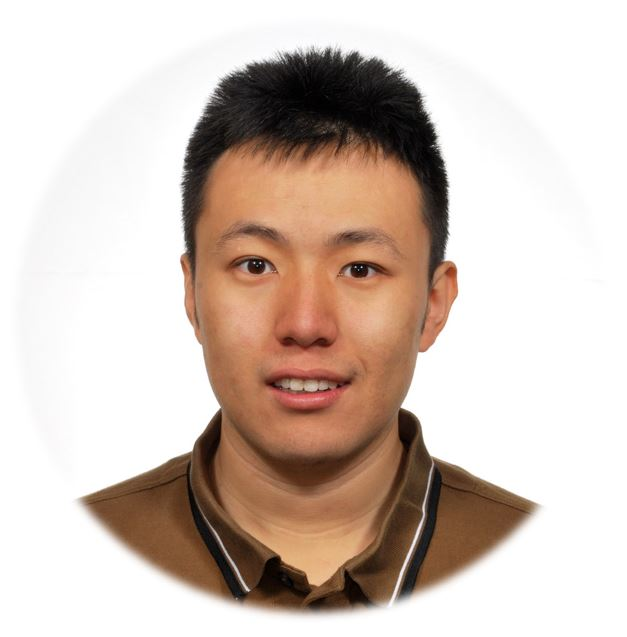
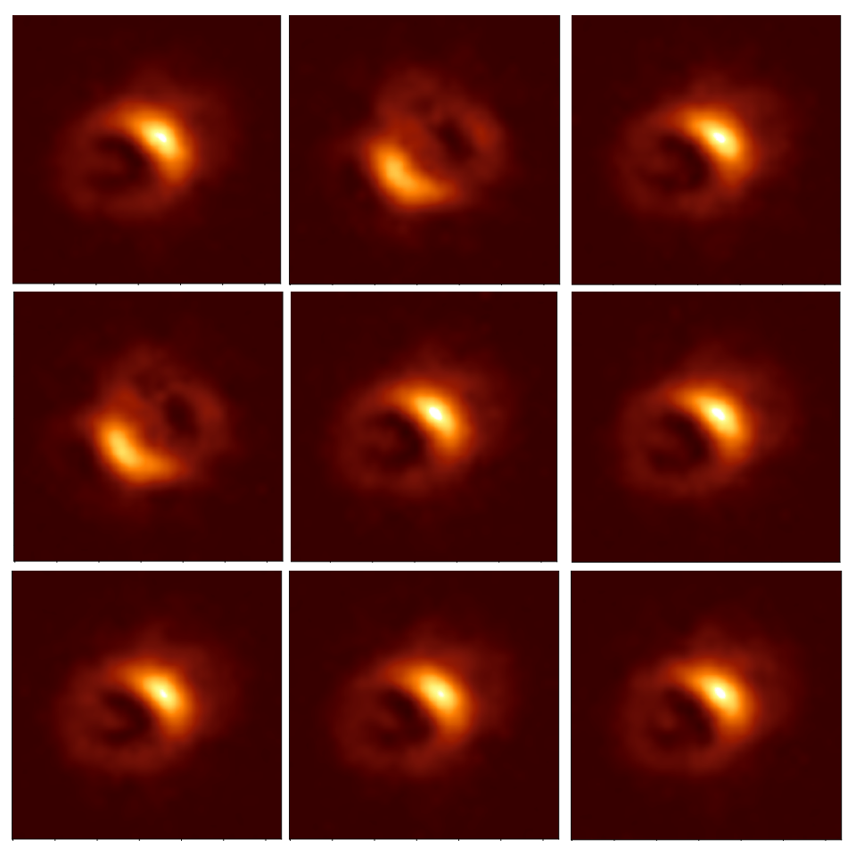
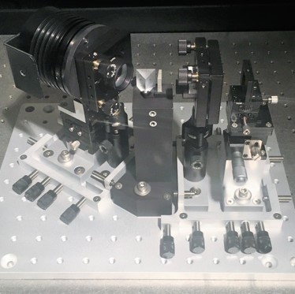

|

Email
GitHub
Twitter
CV
Google Scholar
|
He Sun 孙赫
I am an Assistant Professor of Biomedical Engineering at Peking University in Beijing, China. My research primarily focuses on AI for scientific imaging, which tightly integrates optics, control, signal processing and machine learning for scientific discoveries.
Prior to starting at Peking University, I was a postdoctoral researcher and Amazon AI4Science Fellow at Caltech, where I mainly worked with Katie Bouman on black hole imaging. I received my Ph.D. in Mechanical and Aerospace Engineering from Princeton University in 2019 (advised by N. Jeremy Kasdin) and my bachelor’s degree in Engineering Mechanics and Economics from Peking University in 2014.
Hiring: I have multiple Postdoc/PhD/MS/RA openings in my lab to work on computational imaging for Biomedicine and Astronomy. Please feel free to drop me an email (hesun at pku.edu.cn) if you are interested.
|
News
- 06/2022: I am co-organizing the IEEE Computational Cameras and Displays (CCD) Workshop in CVPR 2022. Check out our website for the exciting program.
- 05/2022: EHT announced the first image of our galactic center black hole, SgrA*. Our alpha-DPI pipeline was utilized in its feature extraction analysis. Check Caltech News for more details.
- 05/2022: alpha-Deep Probabilistic Inference (alpha-DPI): efficient uncertainty quantification from exoplanet astrometry to black hole feature extraction accepted for publication in ApJ. [paper]
Featured Projects
 |
Computational Imaging
|
 |
Adaptive Optics (AO)
Adaptive optics (AO) is a control system that removes the wavefront aberrations in optical systems. It is very important in the large telescopes for achieving high contrast imaging of Earth-like exoplanets. I work on the control algorithms and the spectrograph for space telescope AO. |
Work Experience
Assistant Professor, Peking University, May 2022 -
Postdoctoral Researcher, California Institute of Technology, Oct 2019 - March 2022
Research Intern, Mitsubishi Electric Research Laboratories (MERL), Jun-Sep 2018
Services
- Reviewer for IEEE Transactions on Image Processing (TIP), Optics Letter, IEEE/CAA Journal of Automatica Sinica, Journal of Astronomical Telescopes, Instruments and Systems (JATIS), Astronomy and Astrophysics (A&A), ICCV 2021, CVPR 2022, ECCV 2022, ICASSP 2020&2021&2022
- Program committee member of CCD-CVPR 2021/2022, LCI-ICCV 2021, MedNeurIPS 2021
- Member of the Committee on Caltech CMS Graduate Admissions, 2020-2022
- Member of the Priorities Committee (budgeting committee) of Princeton University, 2017-2018
Teaching
- Guest lecturer, Data-Driven Algorithms Design (CS 159), Caltech, Spring 2020
- Guest lecturer, Computational Cameras (CS/EE166), Caltech, Spring 2020&2021&2022
- Teaching assistant, Automatic Control System (MAE433), Princeton, Fall 2018
- Teaching assistant, Introduction to Engineering Dynamics (MAE206), Princeton, Spring 2018
- Teaching assistant, Space Flight, Princeton (MAE341), Fall 2017
- Teaching assistant, Mathematics in Engineering (MAE305/MAT391), Princeton, Fall 2016
Awards
- Best paper, Machine Learning for Health Conference (ML4H), 2021
- Amazon AI4Science Fellowship, California Institute of Technology, 2020
- Best paper for observation technologies and systems, IEEE Aerospace Conference, 2019
- Britt and Eli Harari Fellowship, Princeton University, 2018
- SEAS Award for Excellence, Princeton University, 2017
- ExxonMobil Scholarship, Peking University, 2013
- Scholarships for Students in Japan, JASSO, 2013
- Boeing Scholarship, Peking University, 2012
Selected Publications
PhD Thesis
Computational Imaging
Adaptive Optics and Spectroscopy
Astronomical Image Processing
Robot Motion Planning
Last updated: by He Sun.
|